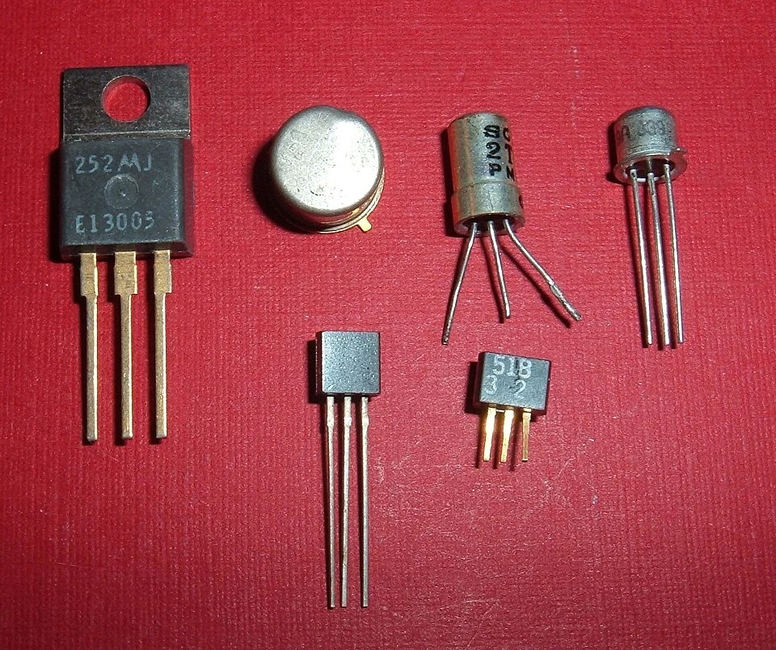
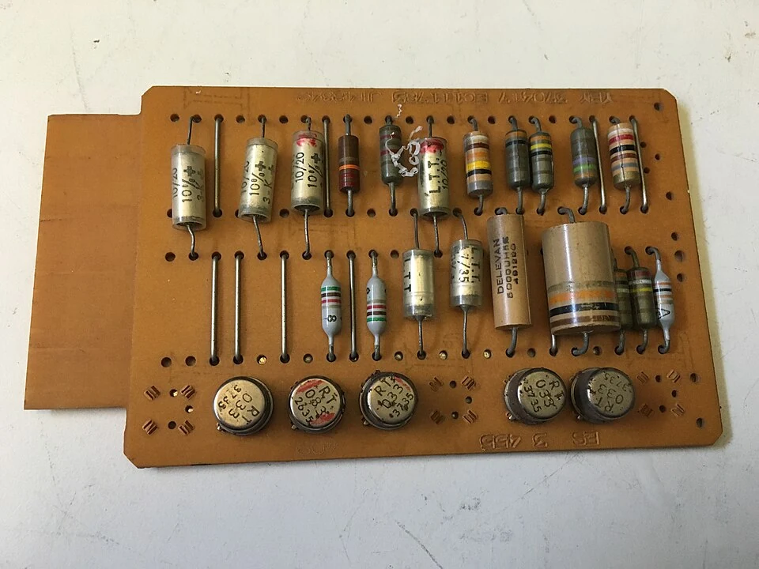
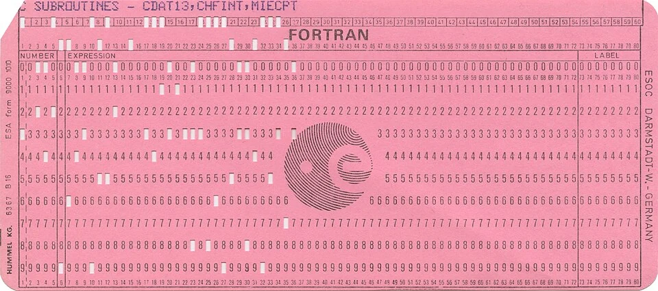
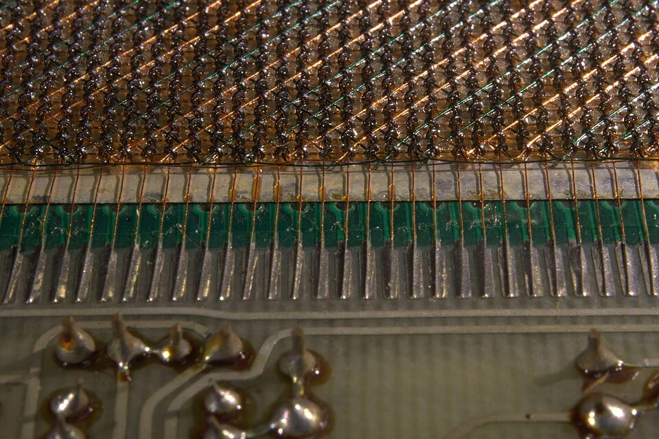
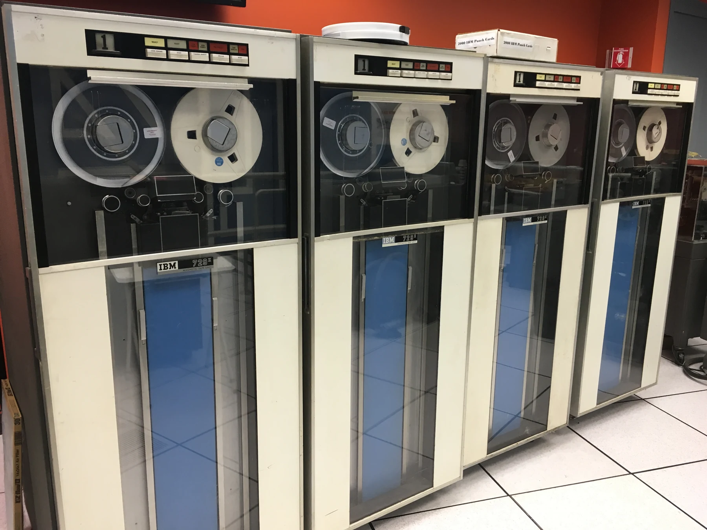

Menos tamaño. Más posibilidades.
El transistor cambió la escala de la computación. Las máquinas ganaron fiabilidad y eficiencia, mientras los lenguajes de programación acercaron su uso a la ciencia, la industria y la administración.
Explorar esta generación
Un salto hacia el estado sólido
El transistor, desarrollado en 1947 en Bell Labs, abrió una alternativa a las válvulas. Su incorporación a las computadoras se extendió durante la década de 1950. Fabricado con materiales semiconductores, podía actuar como interruptor sin necesitar un filamento caliente dentro de un tubo de vidrio.
Esto permitió reducir el consumo, el calor y el espacio de los circuitos. Sin embargo, una computadora seguía reuniendo muchas piezas y conexiones individuales. La miniaturización era un avance gradual: sustituir un componente no eliminaba de inmediato el tamaño de todos los sistemas de memoria y almacenamiento.

Un lenguaje más cercano a las personas
La programación en ensamblador ofreció nombres simbólicos para operaciones de máquina. Los lenguajes de alto nivel llevaron esta separación más lejos: un compilador podía traducir instrucciones más legibles a código ejecutable. FORTRAN se vinculó especialmente con el cálculo científico y COBOL con el procesamiento de datos comerciales.
Escribir programas seguía exigiendo precisión y conocimiento técnico, pero ya no todo debía expresarse directamente en números binarios. Estas herramientas facilitaron el mantenimiento de programas y ayudaron a consolidar la programación como una actividad profesional.

Memoria que se podía organizar
La memoria de núcleos magnéticos almacenaba bits mediante pequeños anillos de material magnético atravesados por cables. Fue una tecnología importante durante las décadas de 1950 y 1960. Las cintas magnéticas permitían conservar grandes conjuntos de datos y recorrerlos de manera secuencial.
Muchos trabajos se procesaban por lotes: se preparaban programas y datos, se entregaban al centro de cálculo y se recogían los resultados después. No era todavía la experiencia habitual de escribir en una pantalla y recibir una respuesta inmediata.

La computadora entra en las organizaciones
Equipos como el IBM 1401 y el IBM 7090, ambos anunciados en 1959, ilustran la expansión del transistor hacia necesidades comerciales y científicas. Las organizaciones empleaban computadoras para nóminas, inventarios, estadísticas y cálculos de ingeniería.
Aunque su costo seguía limitando el acceso, procesar información de forma repetible pasó a ser una ventaja práctica. El siguiente reto era reunir varios componentes en una sola pieza de semiconductor: una idea que dio origen a los circuitos integrados.

¿Qué ventaja ofreció el transistor frente al tubo de vacío?
Elige una respuesta y comprueba lo que aprendiste.